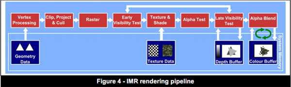

TileBasedDeferredRendering
Table of Contents
TileBasedDeferredRendering note.
<!– more –>
Immediate Mode Renderers (IMR)

Early Z 失效
- 开启 Alpha Test（glEnable(GL_ALPHA_TEST)）：
- 开启 Alpha Blend：
- Pixel Kill: pixel shader 中的 clip/discard 指令
- 关闭深度测试：
Tile Based Rendering (TBR)
Tile Based Deferred Rendering (TBDR)
Use Tile-Based Deferred Rendering Efficiently
避免 Logical Buffer Load 和 Store 操作
TBDR 图形处理器在绘制一个 Tile 时，会先将 framebuffer 对应的块从共享内存传输到 tile 内存中。这种内存的传输操作被称为 Logical Buffer Load。通常，在渲染下一帧时是不需要前一帧的内容的。为了避免加载前一帧缓冲区内容，可以在开始渲染新的一帧前调用 glClear。
类似的，当 GPU 结束一个 Tile 的渲染后，必须将 tile 的像素数据写回共享内存。这种内存的传输操作被称为 Logical Buffer Store。渲染每帧必须至少有一次这样的数据传输，被显示在屏幕上的颜色渲染缓冲区必须被传输到共享内存，这样才会被 CoreAnimation 展示，其他的帧缓冲区（例如 depth stencil multisampling buffers）不需要保留，因为这些缓冲区的内容在下一帧会被重新创建。OpenGL ES 会自动将这些缓冲区写回共享内存，这会导致性能消耗。可以调用 glInvalidateFramebuffer（OpenGL ES 3.0）或者 glDiscardFramebufferEXT(OpenGL 1.1 or 2.0)来显示指定不写回共享内存。
Use Hidden Surface Removal Effectively
当 blending 或者 alpha testing 开启，或者 fragment shader 中使用了 discard 或者使用 gl_FragDepth 输出变量。此时，GPU 无法使用深度缓冲区断定片段的可见性，因此必须为所有图元覆盖的每个像素点执行片段着色器。
如果无法避免使用 blending、alpha testing、discard 指令，可以通过使用下面的策略来减少性能消耗：
- 先渲染不透明物体，后渲染使用了 alpha testing、discard 指令的物体，最后渲染 alpha-blended 的物体
- 修剪需要 discard、alpha-blended 的物体，减少处理的片段数量。
- 在片段着色器中尽早使用 discard 指令，避免执行无用的计算。
- 使用 alpha blending(将 alpha 设置为 zero)代替 alpha testing 或 discard 指令。这样颜色帧缓冲区不被修改，但是图形硬件依然可以使用 Z-buffer 进行优化处理。这样做确实修改了 depth buffer 中存储的值，所以需要从后到前排序透明图元。
- 如果性能被不可避免的 discard 操作影响，可以考虑 Z-Prepass 渲染策略。先使用简单的片段着色器(其中只包含 discard 逻辑，避免耗时的光照计算)渲染一遍场景来填充 depth buffer。然后使用 GL_EQUAL 深度测试和光照渲染再渲染一遍场景。尽管多次渲染通常会导致性能问题，这种方式要比单次渲染中包含大量 discard 操作要性能更佳。
Q&A
为什么 TBDR 可以实现 hidden surface removal ？
因为 TBDR 中，当提交渲染指令到硬件后，渲染指令会被缓存到一个列表中。硬件不会处理这些指令，直到你显示 renderbuffer 或者 flush 指令 buff 时，才会开始处理顶点并且对像素着色。所以 TBDR 一次性处理了场景的所有顶点，这样 GPU 就可以在片段被处理之前知道场景中所有对象的遮挡关系从而进行隐藏表面消除。